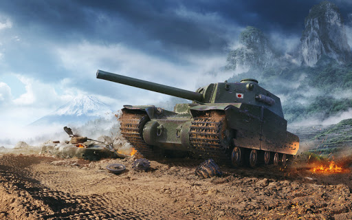

Komputerowa gra symulacyjna typu MMO wyprodukowana i wydana w 2010 roku przez Wargaming.net. Gra oparta jest na modelu płatności free-to-play.
Rozgrywka skupia się na bitwach pancernych pomiędzy graczami w interakcji player versus player z wykorzystaniem różnego typu wozów bojowych. Gracz ma do dyspozycji ponad 450 pojazdów: czołgów (lekkich, średnich, ciężkich), artylerii samobieżnej, pojazdów kołowych oraz niszczycieli czołgów z okresu od I wojny światowej aż po wczesną zimną wojnę, pochodzących ze Stanów Zjednoczonych, Czechosłowacji, ZSRR, III Rzeszy, Francji, Wielkiej Brytanii, Chin, Japonii, Szwecji, Włoch i Polski. Pojazdy występujące w grze w części są oparte na swoich historycznych odpowiednikach, lecz zmodyfikowane ze względów praktycznych dla rozgrywki, zaś w części bazują na wczesnych projektach lub są to czysto fikcyjne pojazdy.
W lutym 2013 roku liczba zarejestrowanych graczy przekroczyła 50 milionów. Gra została wpisana do Księgi rekordów Guinnessa w kategorii „największej liczby graczy zalogowanych jednocześnie na jednym serwerze gry MMO” (21 stycznia 2013 na jednym z serwerów rosyjskich zalogowanych było 190 541 graczy). Wcześniejszy rekord również należał do tej gry – 23 stycznia 2011 na serwerze było 91 311 osób.
ROZGRYWKA
Na początku gracz otrzymuje do swojej dyspozycji po jednym czołgu z każdego państwa (III Rzeszy, ZSRR, Stanów Zjednoczonych, Włoch, Francji, Wielkiej Brytanii, Chin, Japonii, Czechosłowacji, Polski i Szwecji). W miarę zdobywania doświadczenia i kredytów może kupować ulepszenia do danego czołgu oraz rozwijać drzewo technologiczne, które pozwala na odblokowanie kolejnych pojazdów. Ulepszenia pojazdu obejmują silnik, wieżę, układ jezdny, działo oraz radio, co pozwala na eksperymenty i zwiększenie potencjału bojowego. Wszystkie modyfikacje mają swoje historyczne uzasadnienie – istniały jako prototypy lub zostały wprowadzone w rzeczywistości.
Gra posiada również system rozwoju załogi – bardziej doświadczona załoga będzie sprawdzała się lepiej na placu boju; załoga z wyszkoleniem 100% będzie szybciej ładowała, naprawiała oraz sprawniej obsługiwała czołg gracza w porównaniu do załogi z mniejszym procentowo wyszkoleniem. Dodatkowo doświadczeni członkowie załogi mogą uczyć się nowych zdolności tzw. perków np. szósty zmysł pozwala dowódcy na określenie czy jego pojazd został wykryty przez wroga. Gracz ma także możliwość zamontowania sprzętu dodatkowego do swojego czołgu, począwszy od siatek kamuflażowych, które zmniejszają ryzyko zauważenia czołgu przez wroga, a kończąc na nowoczesnych systemach naprowadzania (które zwiększają szybkość celowania działa) lub dosyłaczach (które przyspieszają ładowanie działa).
Istnieje także sprzęt eksploatacyjny, na przykład apteczka, która leczy rannego członka załogi, czy zestaw naprawczy, który naprawia uszkodzony lub zniszczony moduł czołgu do pełnej wartości, w odróżnieniu od automatycznej naprawy, która moduł ciężko uszkodzony naprawia jedynie do stanu lekko uszkodzonego.